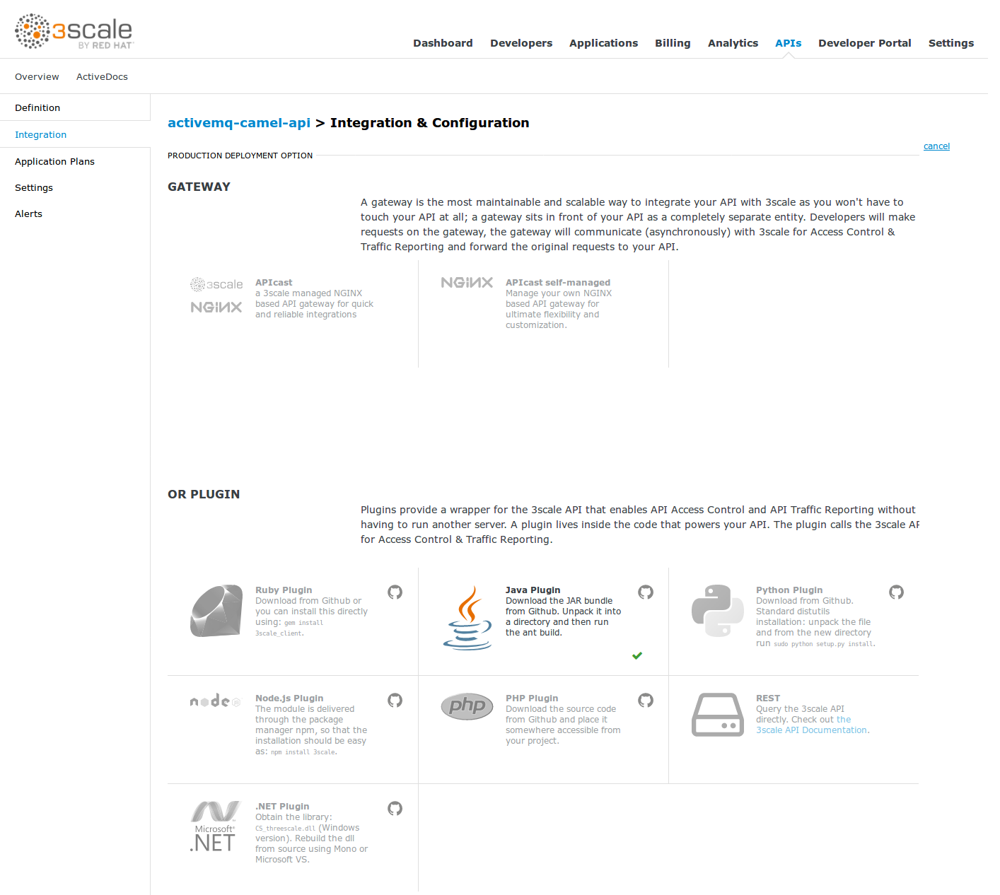
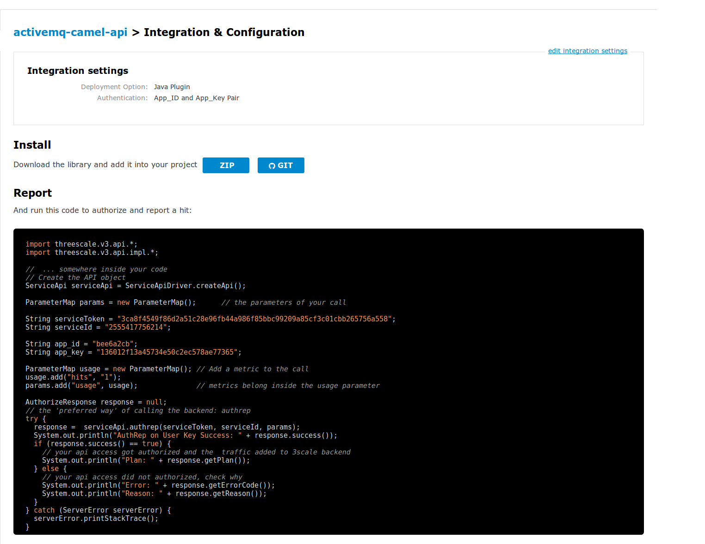
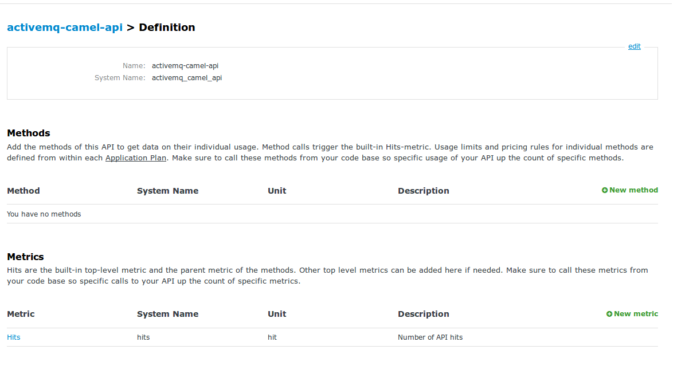
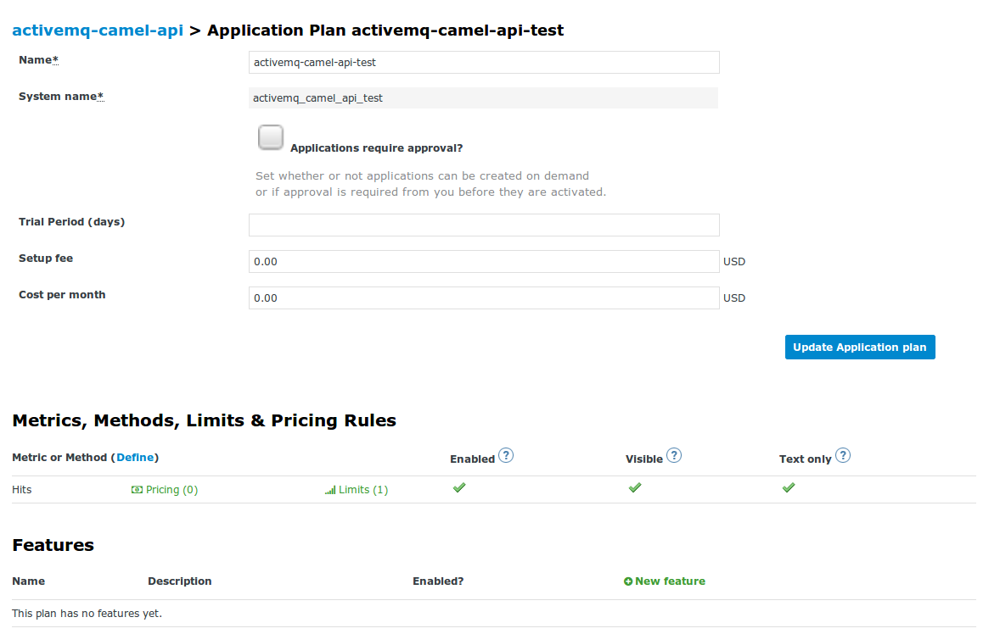

Authenticating a JMS consumer with 3Scale, Camel and ActiveMQ
3Scale is an API Management platform used for authenticating an throttleing API calls among many, many other things. Now when thinking of API’s most people think of RESTfull API’s these days. And altough 3Scale primarily targets RESTfull API’s it is also possible to use other types of API’s as this blog will demonstrate. In this post we will use a Camel JMS subscriber in combination with ActiveMQ and authenticate requests against the 3Scale API Management platform.
First let’s look at the 3Scale setup.
The first step is to create a new service, however normally one would select one of the APICast API Gateway options for handling the API traffic. This time however we are selecting the Java plugin option, since Camel is based on Java. Obviously the same principles could be applied in one of the other programming languages for which plugins are available. 
The next step is to go to the integration page. But, where normally we would configure the mapping rules of our RESTfull API, we now get instructions to implement the Java plugin. 
It is good to note the rest of the 3Scale setup is completely default. De default Hits metric is used as shown below, although custom methods could easily be defined.

For this example one application plan with a rate limit has been configured.

Integrating the 3Scale Java plugin with Apache Camel
Apache Camel has numerous ways of integrating custom code and creating customizations. For this example a custom processor is created, although a bean, or component would work also.
The first step is to import the 3Scale java plugin dependency via Maven, by adding the following to the pom.xml file:
<dependency>
<groupId>net.3scale</groupId>
<artifactId>3scale-api</artifactId>
<version>3.0.4</version>
</dependency>
Now we can integrate the 3Scale Java plugin in our Camel processor, which is going to retrieve the 3Scale appId and appKey, used for authentication from JMS headers. With the appId and appKey the 3Scale API is called for authentication. However this is not the only thing we need to pass in our request towards 3Scale. To authenticate against 3Scale selecting the correct 3Scale account and service we need to pass the ServiceId of the service we created above and pass the accompanying service token. Since these are fixed per environment we retrieve these values from a properties file. Finally we need to increment the hits metric. Once all these parameters are passed in the request we can invoke 3Scale and authenticate our request. If we are authenticated and authorized for this API we finish the processor, following the Camel Route execution. However, when we are not authenticated we are going to stop the route and any further processing. The entire processor looks like this:
package nl.rubix.eos.api.camelthreescale.processor;
import org.apache.camel.Exchange;
import org.apache.camel.Processor;
import org.apache.camel.RuntimeCamelException;
import org.apache.deltaspike.core.api.config.ConfigProperty;
import threescale.v3.api.AuthorizeResponse;
import threescale.v3.api.ParameterMap;
import threescale.v3.api.ServerError;
import threescale.v3.api.ServiceApi;
import threescale.v3.api.impl.ServiceApiDriver;
import javax.inject.Inject;
import javax.inject.Named;
@Named("authRepProcessor")
public class AuthRepProcessor implements Processor {
@Inject
@ConfigProperty(name = "SERVICE_TOKEN")
private String serviceToken;
@Inject
@ConfigProperty(name = "SERVICE_ID")
private String serviceId;
@Override
public void process(Exchange exchange) throws Exception {
String appId = exchange.getIn().getHeader("appId", String.class);
String appKey = exchange.getIn().getHeader("appKey", String.class);
AuthorizeResponse authzResponse = authrep(createParametersMap(appId, appKey));
if(authzResponse.success() == false) {
exchange.setProperty(Exchange.ROUTE_STOP, true);
exchange.getIn().setHeader("authz:errorCode", authzResponse.getErrorCode());
exchange.getIn().setHeader("authz:reason", authzResponse.getReason());
}
}
private ParameterMap createParametersMap(String appId, String appKey) {
ParameterMap params = new ParameterMap();
params.add("app_id", appId);
params.add("app_key", appKey);
ParameterMap usage = new ParameterMap();
usage.add("hits", "1");
params.add("usage", usage);
return params;
}
private AuthorizeResponse authrep(ParameterMap params) {
ServiceApi serviceApi = ServiceApiDriver.createApi();
AuthorizeResponse response = null;
try {
response = serviceApi.authrep(serviceToken, serviceId, params);
} catch (ServerError serverError) {
serverError.printStackTrace();
throw new RuntimeCamelException(serverError.getMessage(), serverError.getCause());
}
return response;
}
}
We simply use this processor in our Camel route to add the 3Scale functionality:
package nl.rubix.eos.api.camelthreescale;
import io.fabric8.annotations.Alias;
import org.apache.activemq.camel.component.ActiveMQComponent;
import org.apache.camel.builder.RouteBuilder;
import org.apache.camel.cdi.ContextName;
import javax.inject.Inject;
@ContextName("activemq-camel-api")
public class ActiveMqCamelApi extends RouteBuilder{
@Inject
@Alias("jms")
private ActiveMQComponent activeMQComponent;
@Override
public void configure() throws Exception {
from("jms:queue:test")
.log("received message")
.process("authRepProcessor")
.log("request authenticated and authorized");
}
}
When looking at the logs we can see the request is authenticated when we send a request with the correct appId and appKey in the JMS headers. When looking at the logs we can see the request is passing the processor:
2018-03-10 20:28:40,294 [cdi.Main.main()] INFO DefaultCamelContext - Route: route1 started and consuming from: Endpoint[jms://queue:test]
2018-03-10 20:28:40,295 [cdi.Main.main()] INFO DefaultCamelContext - Total 1 routes, of which 1 are started.
2018-03-10 20:28:40,295 [cdi.Main.main()] INFO DefaultCamelContext - Apache Camel 2.17.0.redhat-630187 (CamelContext: activemq-camel-api) started in 0.512 seconds
2018-03-10 20:28:40,318 [cdi.Main.main()] INFO Bootstrap - WELD-ENV-002003: Weld SE container STATIC_INSTANCE initialized
2018-03-10 20:29:37,157 [sConsumer[test]] INFO route1 - received message
2018-03-10 20:29:38,307 [sConsumer[test]] INFO route1 - request authenticated and authorized
And off course we can see the metrics in 3Scale:

Now this processor discards the message when the authentication by 3Scale fails, but it is off course possible to send the unauthorized messages towards a special error queue, or make the entire route transactional and simply do not send an ACK when authentication fails.
The entire code of this example is available on Github.